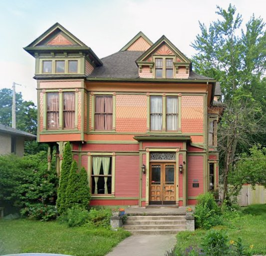

🌦 South Bend Weather Live forecast
Loading forecast…
Forecast updates when the app opens. Requires internet.
📅 Weekend at a Glance
Travel from New Jersey to South Bend; settle in at the Airbnb.
SMU at Notre Dame • 7:30 PM ET.
Return to Chicago and fly home.
🏠 Our Airbnb

723 Park Avenue
South Bend, IN 46616
Joe Rule is the Airbnb host.
👥 Friends at Notre Dame
Our Airbnb • 13 people
Phelan: Kevin and his brother Scott
Wortley: Michael, Allison, Will, Bennett
Veurink: Dean
Rule: Joe, Laura, Hunter, Kate
Crean: Stephanie, Bill
Staying elsewhere in South Bend
James McFarland and family
Steve and Cray Moiles
Scott and Angie Barnes
Staying in Chicago
Rob and Charlie Baker
Roland and Lila
Dave, Michelle and JB
Byron and Nancy
Gus Mader
✈️ Friday • Getting There
Central Terminal Parking • Terminals A, B & C
Reference EWRA1716088
Paid $132.50
Open Apple Wallet on your iPhone to scan the pass at the garage entrance. No need to search email.
First Class • seats 2E, 2F • Boeing 737-800
Reservation pickup time: 6:00 PM CT
South Bend is one hour ahead of Chicago.
🚗 Avis • Chicago O'Hare
Premium • Toyota Crown or similar
Pickup Fri Nov 20, 6:00 PM CT
Return Sun Nov 22, 12:00 PM CT
Confirmation 12031003US5
Wizard N8H12M
Estimated total $195.82
✈️ Sunday • Coming Home (Conservative Plan)
7:00 AM ET is the conservative departure from the Airbnb. 8:00 AM ET is probably fine under normal traffic and airport conditions, but allows less margin for delays.
Economy • Bill 14C, Stephanie 14B • Boeing 737-800
Open Apple Wallet to scan the pass when exiting. Booking reference EWRA1716088
Reserved exit: 5:15 PM ET. Verify any grace-period rules in your booking terms.
👤 Joe's Flights
Joe has his own rental car.
Friday: AA 2748 • DFW 1:30 PM CT → ORD 3:59 PM CT (scheduled 23 minutes ahead of our arrival).
Tuesday: AA 1958 • ORD 3:51 PM CT → DFW 6:45 PM CT (Joe returns two days later).
Joe's Flighty link🏈 SMU Mustangs at Notre Dame
Saturday, November 21, 2026
Notre Dame Stadium • South Bend, Indiana
Kickoff: 7:30 PM Eastern
🌡 Game Night Weather
Saturday, Nov 21 • South Bend local time (Eastern)
Hourly forecast temperatures interpolated for half-hour times.
🎟 Our Tickets
Level L · Section 15 · Row 54
Individual seat numbers not yet provided. Keep mobile tickets in your ticket provider's app or wallet.
📷See actual fan photo from Section 15, Row 49
Five rows in front of our row • opens the full photo on A View From My Seat
📍 Saturday Plans
To Be Determined